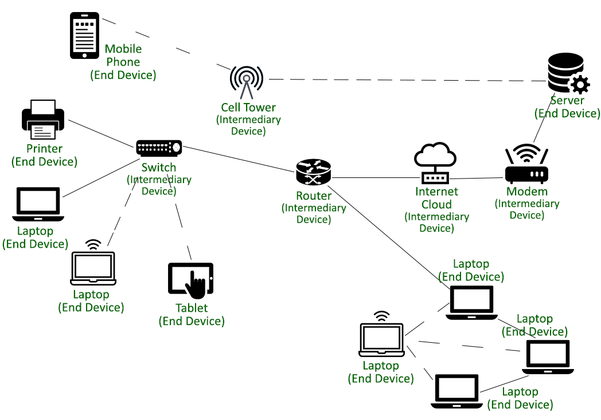

Perangkat Klien adalah perangkat keras yang digunakan oleh pengguna akhir (end-user), seperti komputer desktop, laptop, smartphone, atau tablet, untuk mengakses dan menggunakan layanan yang disediakan oleh server dalam sebuah jaringan.
Fungsi utamanya adalah meminta data, file, atau layanan (misalnya, memuat halaman web atau mengirim email) dari server. Setelah menerima balasan dari server, perangkat klien akan memproses dan menampilkannya agar dapat diinteraksikan oleh pengguna.
Perangkat klien merupakan sisi "pengguna" dari arsitektur jaringan Client-Server.

Server devices adalah komputer khusus yang menyediakan layanan tertentu untuk klien di jaringan, seperti website, email, file, database, atau game online.
Web Server → menyajikan halaman website kepada pengguna.
Mail Server → mengirim dan menerima email.
File Server → menyimpan dan berbagi dokumen.
Database Server → menyimpan dan mengolah data appkasi.
Game Server → menghubungkan pemain agar bisa bermain online bersama.
Peripheral devices adalah perangkat tambahan yang terhubung ke komputer atau jaringan untuk mendukung fungsi utama, seperti mencetak, memindai, merekam, atau menampilkan data.
Printer jaringan 🖨️ → mencetak dokumen dari komputer di jaringan.
Scanner 📠 → memindai dokumen atau gambar ke format digital.
Webcam 📷 → merekam atau menyiarkan video secara real-time.
Fax → mengirim dokumen melalui jaringan telepon.
Speaker atau monitor jaringan → memutar suara atau menampilkan informasi dari jaringan.